library(knitr)We will look at:
The data can be downloaded to a csv from Kaggle webpage. There are 2 main ways of reading data from files:
# Read the csv
train.data = read.csv("train.csv", na.strings = c("NA", ""))
test.data = read.csv("test.csv", na.strings = c("NA", ""))Using the str() function:
Using the summary() function:
# Structure of the dataset
str(train.data)## 'data.frame': 891 obs. of 12 variables:
## $ PassengerId: int 1 2 3 4 5 6 7 8 9 10 ...
## $ Survived : int 0 1 1 1 0 0 0 0 1 1 ...
## $ Pclass : int 3 1 3 1 3 3 1 3 3 2 ...
## $ Name : Factor w/ 891 levels "Abbing, Mr. Anthony",..: 109 191 358 277 16 559 520 629 417 581 ...
## $ Sex : Factor w/ 2 levels "female","male": 2 1 1 1 2 2 2 2 1 1 ...
## $ Age : num 22 38 26 35 35 NA 54 2 27 14 ...
## $ SibSp : int 1 1 0 1 0 0 0 3 0 1 ...
## $ Parch : int 0 0 0 0 0 0 0 1 2 0 ...
## $ Ticket : Factor w/ 681 levels "110152","110413",..: 524 597 670 50 473 276 86 396 345 133 ...
## $ Fare : num 7.25 71.28 7.92 53.1 8.05 ...
## $ Cabin : Factor w/ 147 levels "A10","A14","A16",..: NA 82 NA 56 NA NA 130 NA NA NA ...
## $ Embarked : Factor w/ 3 levels "C","Q","S": 3 1 3 3 3 2 3 3 3 1 ...# Summary
summary(train.data)## PassengerId Survived Pclass Name Sex Age SibSp Parch Ticket Fare Cabin Embarked
## Min. : 1.0 Min. :0.0000 Min. :1.000 Abbing, Mr. Anthony : 1 female:314 Min. : 0.42 Min. :0.000 Min. :0.0000 1601 : 7 Min. : 0.00 B96 B98 : 4 C :168
## 1st Qu.:223.5 1st Qu.:0.0000 1st Qu.:2.000 Abbott, Mr. Rossmore Edward : 1 male :577 1st Qu.:20.12 1st Qu.:0.000 1st Qu.:0.0000 347082 : 7 1st Qu.: 7.91 C23 C25 C27: 4 Q : 77
## Median :446.0 Median :0.0000 Median :3.000 Abbott, Mrs. Stanton (Rosa Hunt) : 1 Median :28.00 Median :0.000 Median :0.0000 CA. 2343: 7 Median : 14.45 G6 : 4 S :644
## Mean :446.0 Mean :0.3838 Mean :2.309 Abelson, Mr. Samuel : 1 Mean :29.70 Mean :0.523 Mean :0.3816 3101295 : 6 Mean : 32.20 C22 C26 : 3 NA's: 2
## 3rd Qu.:668.5 3rd Qu.:1.0000 3rd Qu.:3.000 Abelson, Mrs. Samuel (Hannah Wizosky): 1 3rd Qu.:38.00 3rd Qu.:1.000 3rd Qu.:0.0000 347088 : 6 3rd Qu.: 31.00 D : 3
## Max. :891.0 Max. :1.0000 Max. :3.000 Adahl, Mr. Mauritz Nils Martin : 1 Max. :80.00 Max. :8.000 Max. :6.0000 CA 2144 : 6 Max. :512.33 (Other) :186
## (Other) :885 NA's :177 (Other) :852 NA's :687Types of variables:
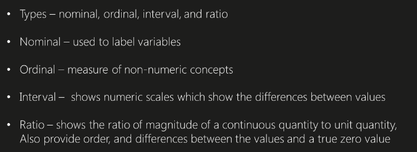
Conversion functions:
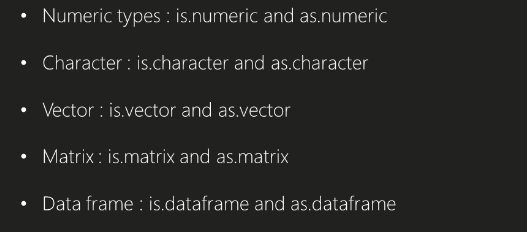
Changing to factor variable in R:
# Changing the PClass INT variable to FACTOR variable
train.data$Pclass = factor(train.data$Pclass)
# Survived class
train.data$Survived = factor(train.data$Survived)
str(train.data)## 'data.frame': 891 obs. of 12 variables:
## $ PassengerId: int 1 2 3 4 5 6 7 8 9 10 ...
## $ Survived : Factor w/ 2 levels "0","1": 1 2 2 2 1 1 1 1 2 2 ...
## $ Pclass : Factor w/ 3 levels "1","2","3": 3 1 3 1 3 3 1 3 3 2 ...
## $ Name : Factor w/ 891 levels "Abbing, Mr. Anthony",..: 109 191 358 277 16 559 520 629 417 581 ...
## $ Sex : Factor w/ 2 levels "female","male": 2 1 1 1 2 2 2 2 1 1 ...
## $ Age : num 22 38 26 35 35 NA 54 2 27 14 ...
## $ SibSp : int 1 1 0 1 0 0 0 3 0 1 ...
## $ Parch : int 0 0 0 0 0 0 0 1 2 0 ...
## $ Ticket : Factor w/ 681 levels "110152","110413",..: 524 597 670 50 473 276 86 396 345 133 ...
## $ Fare : num 7.25 71.28 7.92 53.1 8.05 ...
## $ Cabin : Factor w/ 147 levels "A10","A14","A16",..: NA 82 NA 56 NA NA 130 NA NA NA ...
## $ Embarked : Factor w/ 3 levels "C","Q","S": 3 1 3 3 3 2 3 3 3 1 ...Different ways of detecting missing values:
# On a specific column
is.na(train.data$Age)[1:5]## [1] FALSE FALSE FALSE FALSE FALSE# How many NAs in the column
sum(is.na(train.data$Age) == TRUE)## [1] 177# Proportion against total
sum(is.na(train.data$Age) == TRUE) / nrow(train.data)## [1] 0.1986532#
sapply(train.data, function(df){sum(is.na(df) == TRUE)/ length(df)})## PassengerId Survived Pclass Name Sex Age SibSp Parch Ticket Fare Cabin Embarked
## 0.000000000 0.000000000 0.000000000 0.000000000 0.000000000 0.198653199 0.000000000 0.000000000 0.000000000 0.000000000 0.771043771 0.002244669#
require(Amelia)## Loading required package: Amelia## Warning: package 'Amelia' was built under R version 3.4.3## Loading required package: Rcpp## ##
## ## Amelia II: Multiple Imputation
## ## (Version 1.7.4, built: 2015-12-05)
## ## Copyright (C) 2005-2018 James Honaker, Gary King and Matthew Blackwell
## ## Refer to http://gking.harvard.edu/amelia/ for more information
## ##missmap(train.data, main = "Missing map")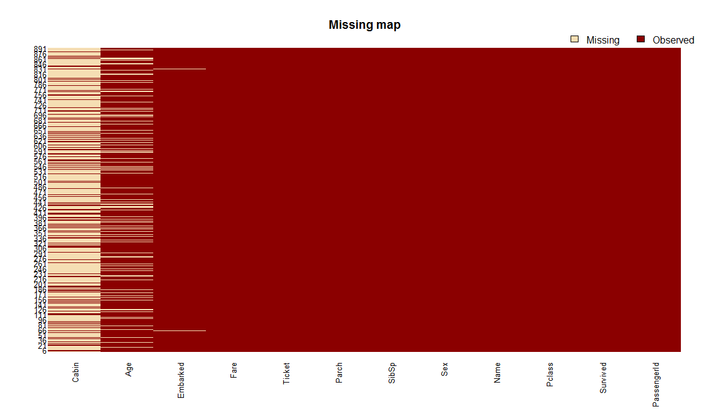
There are 3 ways of handling missing values:
Imputation is basically the idea of assigning certain value to record based on the information of other records. For example, we could impute based on the global avearage, or we could improve imputation by clustering points, and those points with missing factors, can be imputed with the average of the values of the closest points. When we speak about categorical variables, then instead of taking the mean, you can take the most frequent outcome for example.
# Show in a table the distribution of values including NAs
table(train.data$Embarked, useNA = "always")##
## C Q S <NA>
## 168 77 644 2# Assing to the 2 missing values the most frequent value
train.data$Embarked[which(is.na(train.data$Embarked))] = 'S';
table(train.data$Embarked, useNA = "always")##
## C Q S <NA>
## 168 77 646 0# Names as characters
train.data$Name = as.character(train.data$Name)
# Distribution of words
table_words = table(unlist(strsplit(train.data$Name, "\\s+")))
sort(table_words [grep('\\.',names(table_words))],decreasing=TRUE)##
## Mr. Miss. Mrs. Master. Dr. Rev. Col. Major. Mlle. Capt. Countess. Don. Jonkheer. L. Lady. Mme. Ms. Sir.
## 517 182 125 40 7 6 2 2 2 1 1 1 1 1 1 1 1 1# To check which data contains missing values for names
library(stringr)
tb = cbind(train.data$Age, str_match(train.data$Name, "[a-zA-Z]+\\."))
table(tb[is.na(tb[,1]),2])##
## Dr. Master. Miss. Mr. Mrs.
## 1 4 36 119 17# Calculate the mean value of each different group (in this case for each name title)
mean.mr = mean(train.data$Age[grepl(" Mr\\.", train.data$Name) &
!is.na(train.data$Age)])
mean.mrs = mean(train.data$Age[grepl(" Mrs\\.", train.data$Name)
& !is.na(train.data$Age)])
mean.dr = mean(train.data$Age[grepl(" Dr\\.", train.data$Name) &
!is.na(train.data$Age)])
mean.miss = mean(train.data$Age[grepl(" Miss\\.", train.data$Name) &
!is.na(train.data$Age)])
mean.master = mean(train.data$Age[grepl(" Master\\.", train.data$Name) &
!is.na(train.data$Age)])
# Assigning the missing values
train.data$Age[grepl(" Mr\\.", train.data$Name) & is.na(train.data$Age)] = mean.mr
train.data$Age[grepl(" Mrs\\.", train.data$Name) & is.na(train.data$Age)] = mean.mrs
train.data$Age[grepl(" Dr\\.", train.data$Name) & is.na(train.data$Age)] = mean.dr
train.data$Age[grepl(" Miss\\.", train.data$Name) & is.na(train.data$Age)] = mean.miss
train.data$Age[grepl(" Master\\.", train.data$Name) & is.na(train.data$Age)] = mean.master
# To check which data contains missing values for names
tb = cbind(train.data$Age, str_match(train.data$Name, "[a-zA-Z]+\\."))
table(tb[is.na(tb[,1]),2])## < table of extent 0 >barplot(table(train.data$Survived), main="Passenger Survival",names= c("Perished", "Survived"))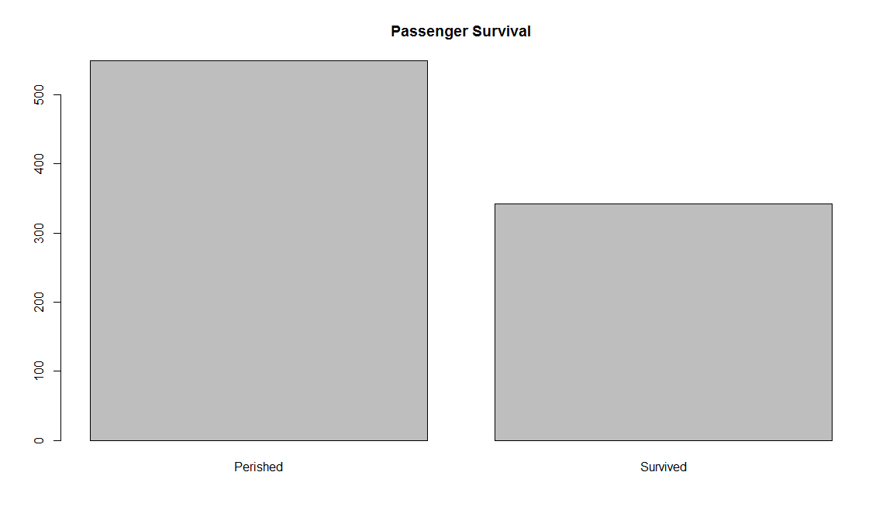
barplot(table(train.data$Pclass), main="Passenger Class",names= c("first", "second", "third"))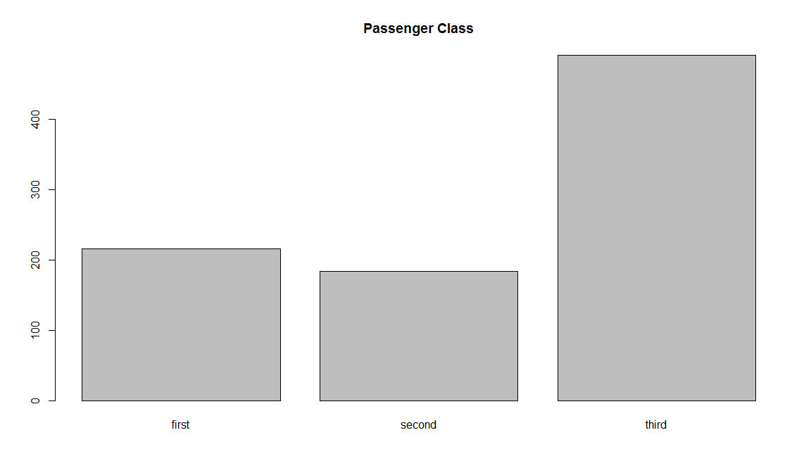
barplot(table(train.data$Sex), main="Passenger Gender")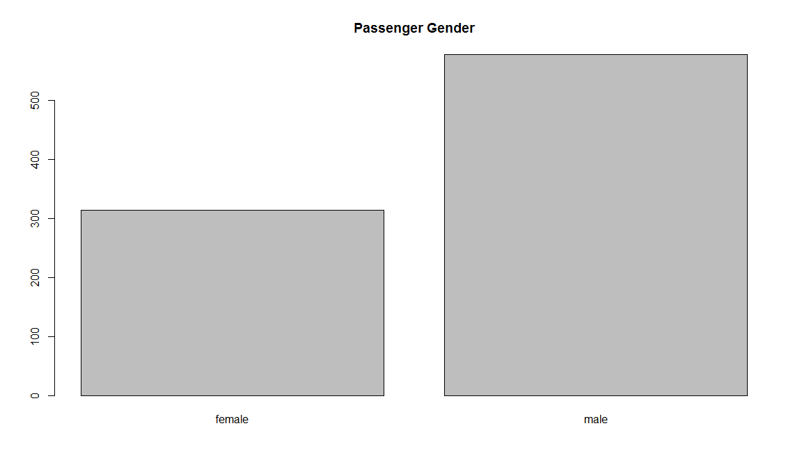
hist(train.data$Age, main="Passenger Age", xlab = "Age")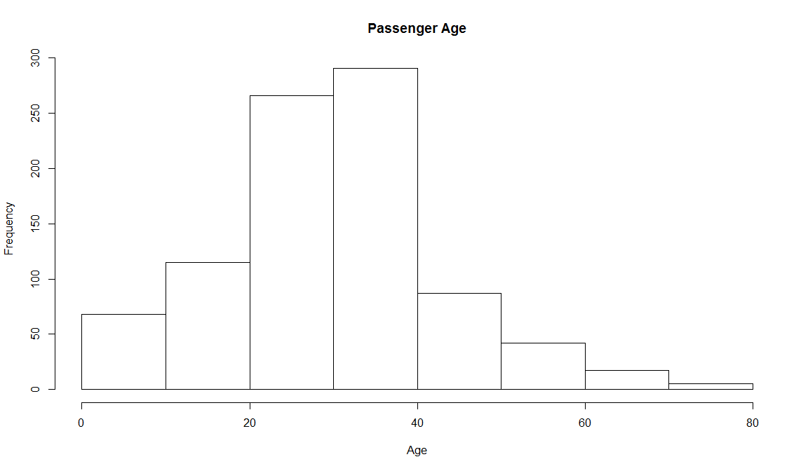
barplot(table(train.data$SibSp), main="Passenger Siblings")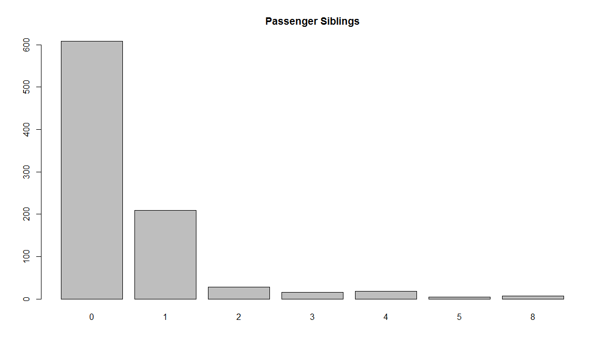
barplot(table(train.data$Parch), main="Passenger Parch")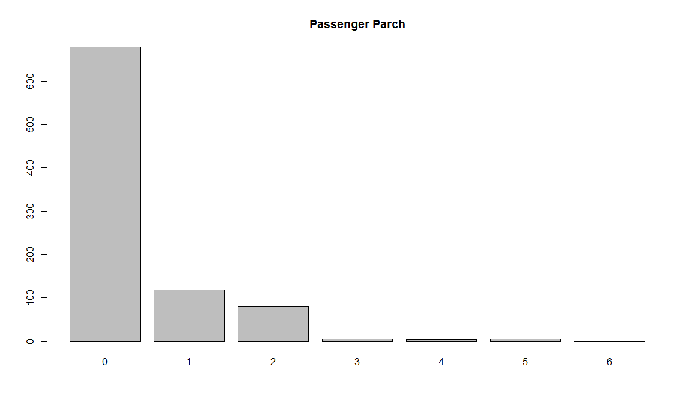
hist(train.data$Fare, main="Passenger Fare", xlab = "Fare")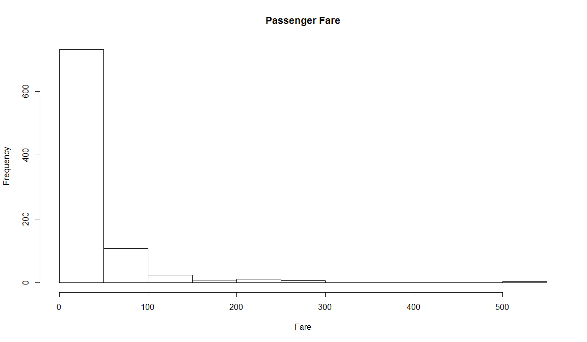
barplot(table(train.data$Embarked), main="Port of Embarkation")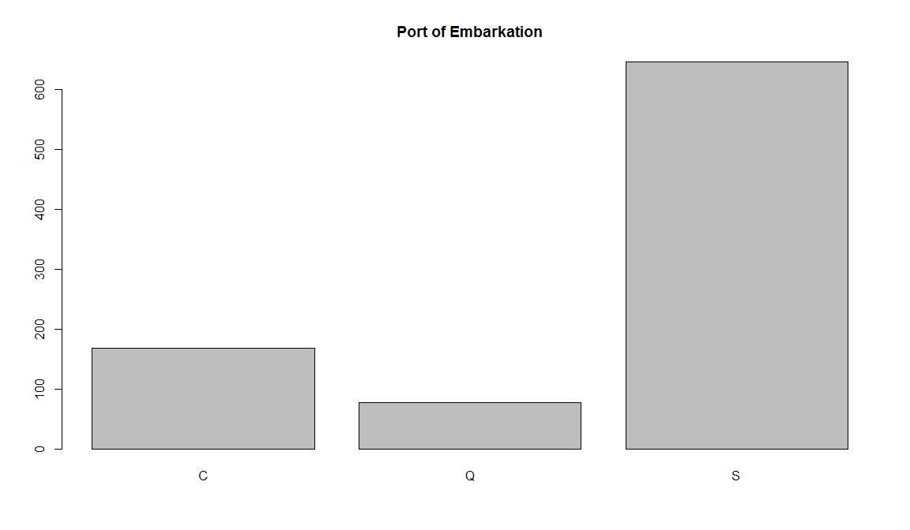
counts = table( train.data$Survived, train.data$Sex)
barplot(counts, col=c("darkblue","red"), legend = c("Perished","Survived"),
main = "Passenger Survival by Sex")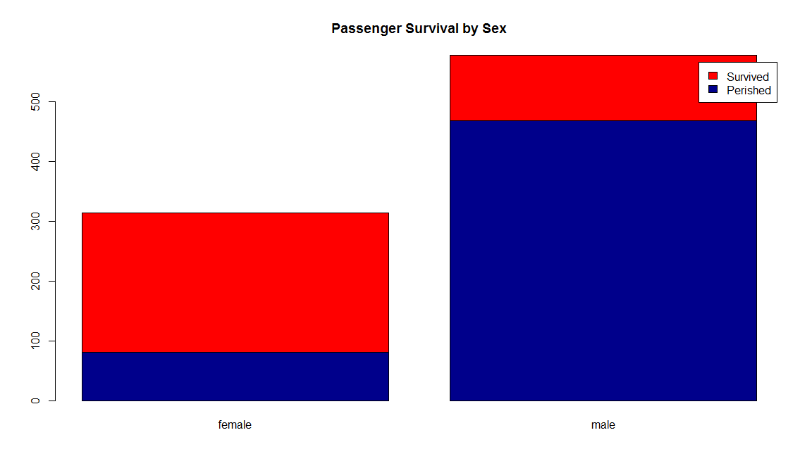
counts = table( train.data$Survived, train.data$Pclass)
barplot(counts, col=c("darkblue","red"), legend =c("Perished","Survived"),
main= "Titanic Class Bar Plot" )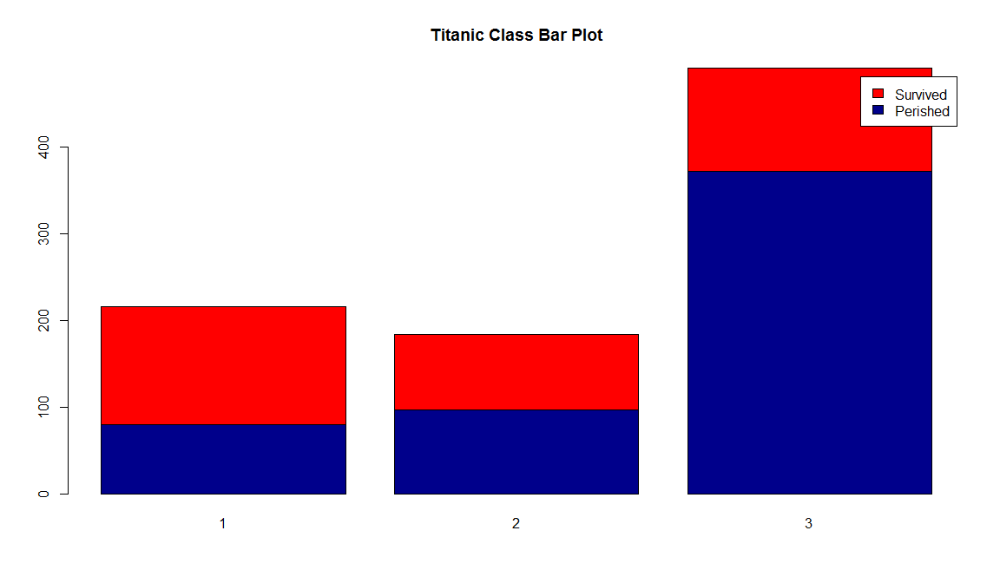
counts = table( train.data$Sex, train.data$Pclass)
barplot(counts, col=c("darkblue","red"), legend =rownames(counts),
main= "Passenger Gender by Class")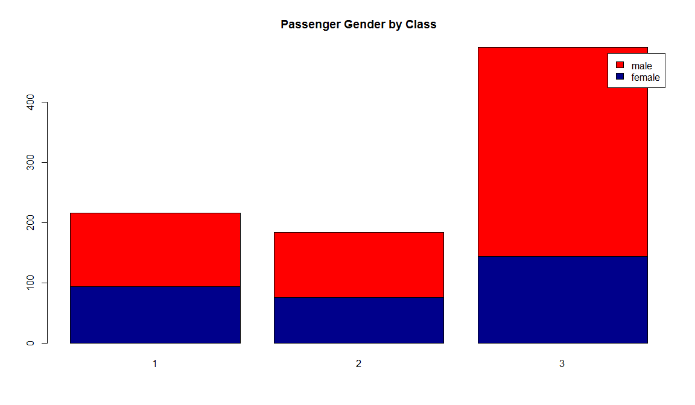
hist(train.data$Age[which(train.data$Survived == "0")], main="Passenger Age Histogram",
xlab="Age", ylab="Count", col ="blue",breaks=seq(0,80,by=2))
hist(train.data$Age[which(train.data$Survived == "1")], col="red",
add = T, breaks=seq(0,80,by=2))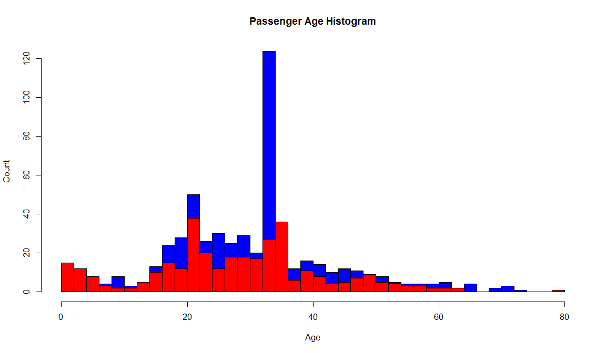
boxplot(train.data$Age ~ train.data$Survived,
main="Passenger Survival by Age",
xlab="Survived", ylab="Age")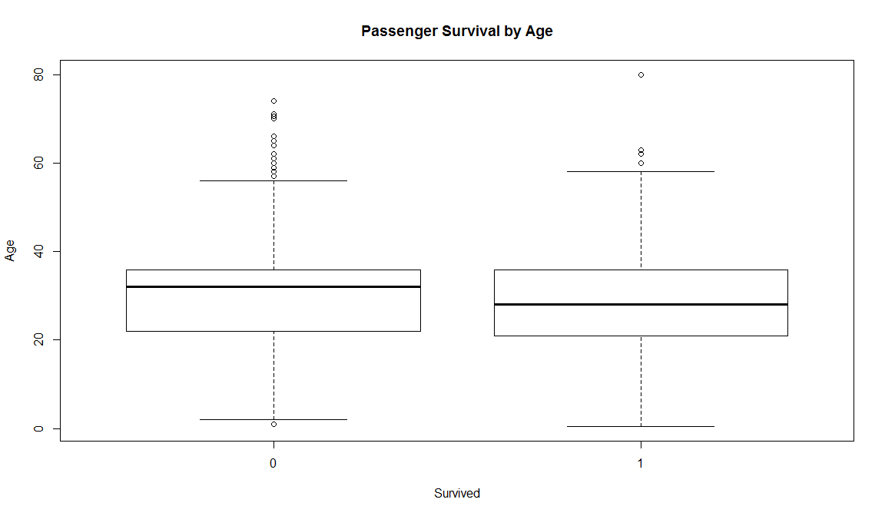
################
train.child = train.data$Survived[train.data$Age < 13]
length(train.child[which(train.child == 1)] ) / length(train.child)## [1] 0.5753425train.youth = train.data$Survived[train.data$Age >= 15 & train.data$Age < 25]
length(train.youth[which(train.youth == 1)] ) / length(train.youth)## [1] 0.4025424train.adult = train.data$Survived[train.data$Age >= 20 & train.data$Age < 65]
length(train.adult[which(train.adult == 1)] ) / length(train.adult)## [1] 0.3651685train.senior = train.data$Survived[train.data$Age >= 65]
length(train.senior[which(train.senior == 1)] ) / length(train.senior)## [1] 0.09090909mosaicplot(train.data$Pclass ~ train.data$Survived,
main="Passenger Survival Class", color=TRUE,
xlab="Pclass", ylab="Survived")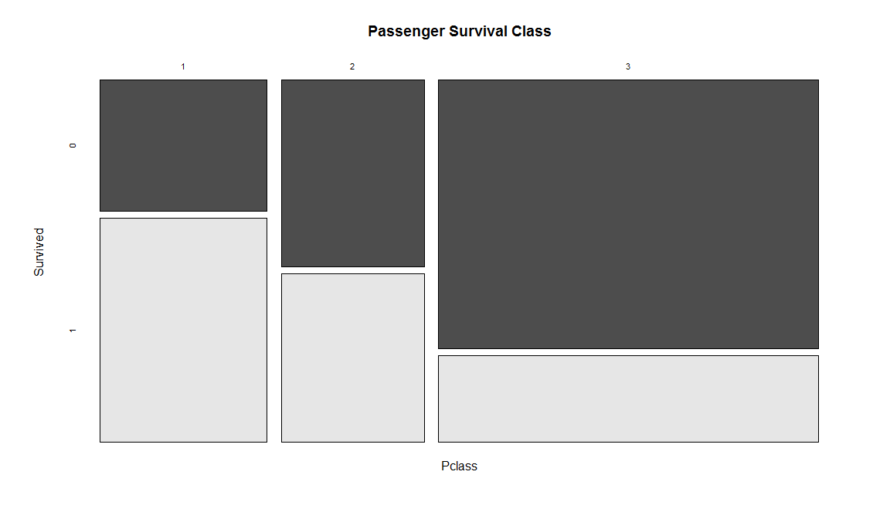
# Split the data - other methods are createDataPartition()
split.data = function(data, p = 0.7, s = 666){
set.seed(s)
index = sample(1:dim(data)[1])
train = data[index[1:floor(dim(data)[1] * p)], ]
test = data[index[((ceiling(dim(data)[1] * p)) +
1):dim(data)[1]], ]
return(list(train = train, test = test))
}
allset= split.data(train.data, p = 0.7)
trainset = allset$train
testset = allset$test
# Building the cTree
require('party')## Loading required package: party## Warning: package 'party' was built under R version 3.4.3## Loading required package: grid## Loading required package: mvtnorm## Warning: package 'mvtnorm' was built under R version 3.4.1## Loading required package: modeltools## Warning: package 'modeltools' was built under R version 3.4.1## Loading required package: stats4## Loading required package: strucchange## Warning: package 'strucchange' was built under R version 3.4.3## Loading required package: zoo## Warning: package 'zoo' was built under R version 3.4.3##
## Attaching package: 'zoo'## The following objects are masked from 'package:base':
##
## as.Date, as.Date.numeric## Loading required package: sandwich## Warning: package 'sandwich' was built under R version 3.4.3##
## Attaching package: 'strucchange'## The following object is masked from 'package:stringr':
##
## boundarytrain.ctree = ctree(Survived ~ Pclass + Sex + Age + SibSp + Fare
+ Parch + Embarked, data=trainset)
train.ctree##
## Conditional inference tree with 7 terminal nodes
##
## Response: Survived
## Inputs: Pclass, Sex, Age, SibSp, Fare, Parch, Embarked
## Number of observations: 623
##
## 1) Sex == {male}; criterion = 1, statistic = 173.672
## 2) Pclass == {2, 3}; criterion = 1, statistic = 30.951
## 3) Age <= 9; criterion = 0.993, statistic = 10.923
## 4) SibSp <= 1; criterion = 0.999, statistic = 14.856
## 5)* weights = 10
## 4) SibSp > 1
## 6)* weights = 13
## 3) Age > 9
## 7)* weights = 280
## 2) Pclass == {1}
## 8)* weights = 87
## 1) Sex == {female}
## 9) Pclass == {1, 2}; criterion = 1, statistic = 59.504
## 10)* weights = 125
## 9) Pclass == {3}
## 11) Fare <= 23.25; criterion = 0.997, statistic = 12.456
## 12)* weights = 85
## 11) Fare > 23.25
## 13)* weights = 23# Plotting
plot(train.ctree, main="Conditional inference tree of Titanic Dataset")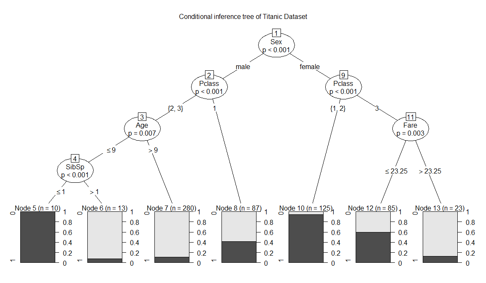
require('e1071')## Loading required package: e1071## Warning: package 'e1071' was built under R version 3.4.3svm.model = svm(Survived ~ Pclass + Sex + Age + SibSp + Fare + Parch +
Embarked, data = trainset, probability = TRUE)# Predict using trained model and new data
ctree.predict = predict(train.ctree, testset)
require(caret)## Loading required package: caret## Loading required package: lattice## Loading required package: ggplot2## Warning: package 'ggplot2' was built under R version 3.4.1# Confusion matrix
u = union(ctree.predict, testset$Survived)
confusionMatrix(factor(ctree.predict, u), factor(testset$Survived, u))## Confusion Matrix and Statistics
##
## Reference
## Prediction 1 0
## 1 68 16
## 0 23 160
##
## Accuracy : 0.8539
## 95% CI : (0.8058, 0.894)
## No Information Rate : 0.6592
## P-Value [Acc > NIR] : 5.347e-13
##
## Kappa : 0.6688
## Mcnemar's Test P-Value : 0.3367
##
## Sensitivity : 0.7473
## Specificity : 0.9091
## Pos Pred Value : 0.8095
## Neg Pred Value : 0.8743
## Prevalence : 0.3408
## Detection Rate : 0.2547
## Detection Prevalence : 0.3146
## Balanced Accuracy : 0.8282
##
## 'Positive' Class : 1
## #
train.ctree.pred = predict(train.ctree, testset)
train.ctree.prob = 1- unlist(treeresponse(train.ctree,testset), use.names=F)[seq(1,nrow(testset)*2,2)]require(ROCR)## Loading required package: ROCR## Loading required package: gplots##
## Attaching package: 'gplots'## The following object is masked from 'package:stats':
##
## lowess# ROCR metrics
train.ctree.prob.rocr = prediction(train.ctree.prob,testset$Survived)
train.ctree.perf = performance(train.ctree.prob.rocr,"tpr","fpr")
train.ctree.auc.perf = performance(train.ctree.prob.rocr,
measure = "auc", x.measure = "cutoff")
# Plotting
plot(train.ctree.perf, col=2,colorize=T, main=paste("AUC:",
train.ctree.auc.perf@y.values))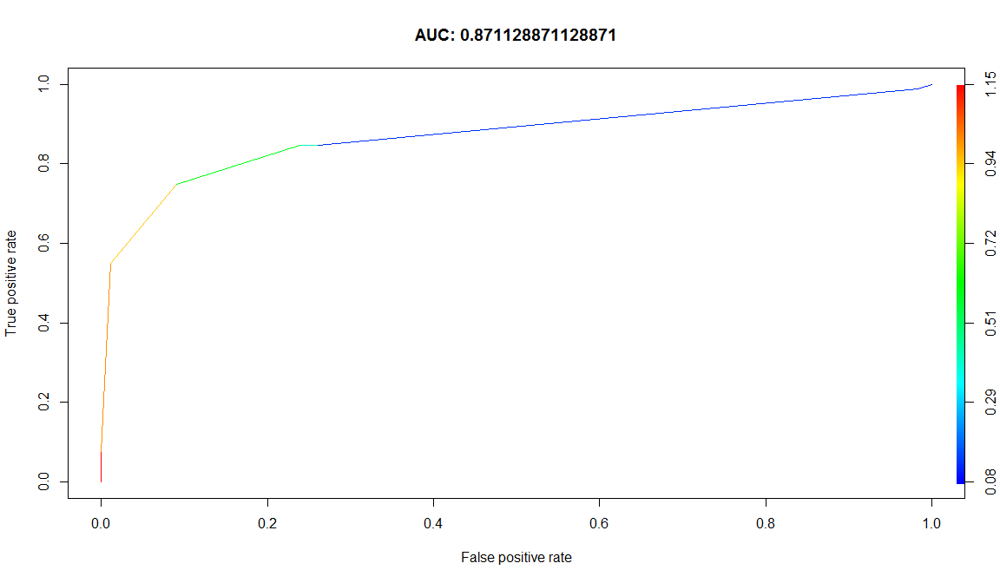